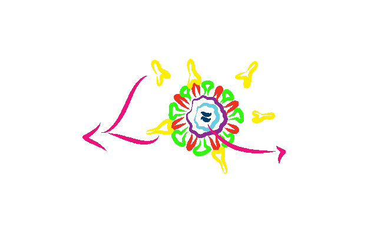
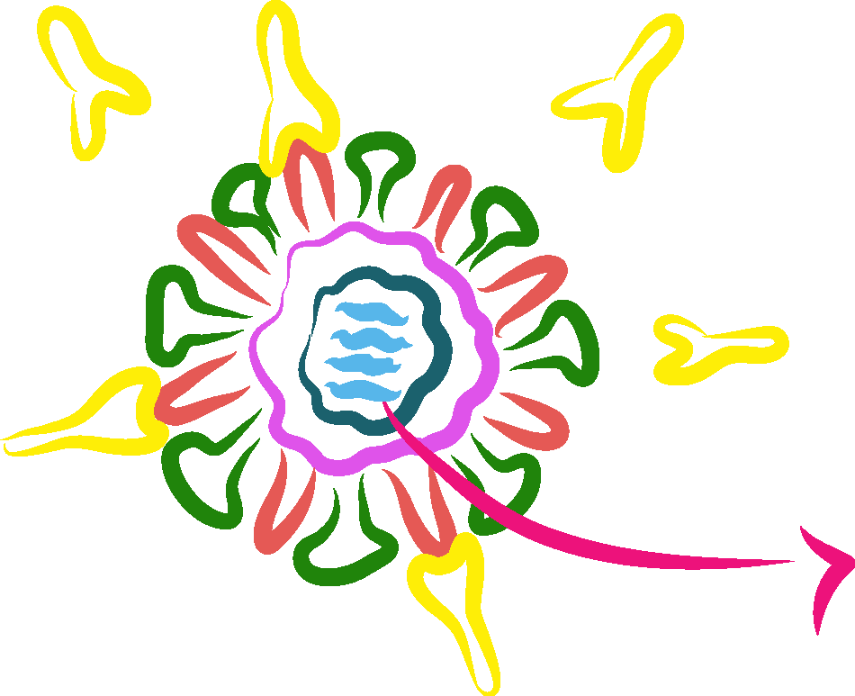

A vacina, que é fabricada com partes do agente infeccioso ou com versões mais fracas do microrganismo, é injetada na corrente sanguínea.

Nosso sistema imunológico reage ao entrar em contato com um antígeno. Os antígenos da vacina são reconhecidos pelo organismo como invasores. Os glóbulos brancos então, produzem anticorpos que atacam os antígenos. São criadas as células de memória.

Depois da vacinação, se o antígeno real atacar o corpo, o sistema imunológico, nas células de memória, estará preparado para reconhecer o inimigo e combatê-lo.

antígeno do microrganismo